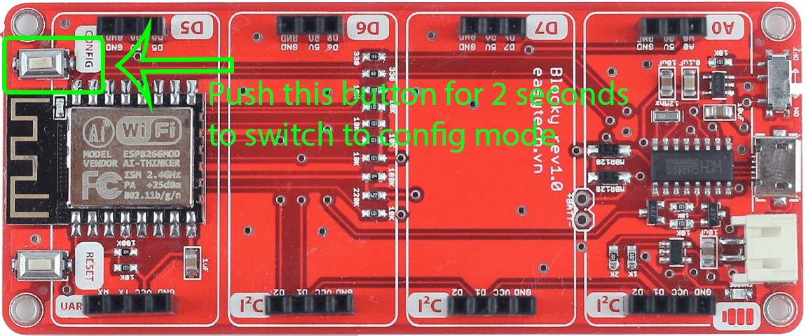
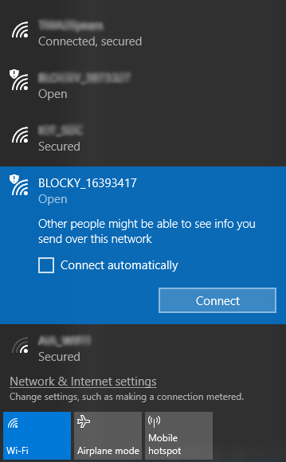

<div layout="row">
    <md-content flex="nogrow" style="width: 600px">
        <div>
            <md-card>
                <md-toolbar>
                    <div class="md-toolbar-tools">
                        <h2>
                            <md-icon md-svg-icon="md-menu"></md-icon>
                            <span>Register new device</span>
                        </h2>
                    </div>
                </md-toolbar>
                <md-stepper-card-content class="md-no-padding">
                    <md-steppers md-dynamic-height md-disable-tabs-behavior="true" md-stretch-steppers="always" md-selected="vm.selectedStep">

                        <!-- Start step one -->
                        <md-step label="" ng-disabled="vm.stepProgress < 1">
                            <md-step-body>
                                <!-- <md-content class="md-padding">
                                    
                                </md-content> -->

                                <div layout="column" layout-align="space-between center">
                                    <div flex layout="row" layout-align="center center">
                                        
                                    </div>
                                    <div flex>
                                        <h6>Press the button as a image for 2 seconds. Blocky will switch to config mode.</h6>
                                    </div>
                                </div>
                                <md-step-actions layout="row">
                                    <div flex layout="row" layout-align="end top">
                                        <md-button class="md-warn" ng-click="vm.closeDialog()">CANCEL</md-button>
                                        <md-button type="submit" class="md-primary md-raised" ng-click="vm.enableNextStep()">NEXT</md-button>
                                    </div>
                                </md-step-actions>
                            </md-step-body>
                        </md-step>
                        <!-- End step one -->

                        <!-- Start step two -->
                        <md-step label="" ng-disabled="vm.stepProgress < 2">
                            <md-step-body>
                                <md-content class="md-padding">
                                    <div layout="row" layout-align="space-between center">
                                        <div flex>
                                            <h6>Open the wireless utility on your computer, select the name (SSID) of the BLOCKY_XXXXXXX
                                                network, and no password for enter (both of these are found on the included
                                                Wi-Fi Configuration Card).
                                            </h6>
                                        </div>
                                        <div flex layout="row" layout-align="center center"></div>
                                    </div>
                                </md-content>
                                <md-step-actions layout="row">
                                    <div flex>
                                        <md-button ng-click="vm.moveToPreviousStep()">PREVIOUS</md-button>
                                    </div>
                                    <div flex layout="row" layout-align="end top">
                                        <md-button class="md-warn" ng-click="vm.closeDialog()">CANCEL</md-button>
                                        <md-button type="submit" class="md-primary md-raised" ng-click="vm.enableNextStep(); vm.loadAPList()">NEXT</md-button>
                                    </div>
                                </md-step-actions>
                            </md-step-body>
                        </md-step>
                        <!-- End step two -->

                        <!-- Start step four -->
                        <md-step label="" md-complete="vm.stepData[2].data.completed" ng-disabled="vm.stepProgress < 3">
                            <md-step-body>
                                <form name="myForm">
                                    <md-content layout-padding>
                                        <div layout="column">
                                            <div flex="60">
                                                <md-select ng-model="selectedWifi" required>
                                                    <md-option ng-value="wifi" ng-repeat="wifi in vm.APList">
                                                        <div layout="row" layout-align="space-around center">
                                                            <div flex="10" ng-if="wifi.rssi < -100">
                                                                
                                                            </div>
                                                            <div flex="10" ng-if="wifi.rssi < -86 && wifi.rssi >= -100">
                                                                
                                                            </div>
                                                            <div flex="10" ng-if="wifi.rssi < -70 && wifi.rssi >= -85">
                                                                
                                                            </div>
                                                            <div flex="10" ng-if="wifi.rssi >= -70">
                                                                
                                                            </div>
                                                            <div flex="90" style="padding-left: 20px; ">{{wifi.ssid}}</div>
                                                        </div>
                                                    </md-option>
                                                </md-select>
                                            </div>

                                            <div flex="20">
                                                <md-input-container class="md-block">
                                                    <input ng-model="passWifi" type="password" placeholder="Password" required>
                                                </md-input-container>
                                            </div>

                                            <div flex="20">
                                                <md-input-container class="md-block">
                                                    <input ng-model="blockyName" type="text" placeholder="New Blocky's name" required>
                                                </md-input-container>
                                            </div>

                                        </div>
                                    </md-content>
                                </form>

                                <md-step-actions layout="row">
                                    <div flex>
                                        <md-button ng-click="vm.moveToPreviousStep()">PREVIOUS</md-button>
                                    </div>
                                    <div flex layout="row" layout-align="end top">
                                        <md-button class="md-warn" ng-click="vm.closeDialog()">CANCEL</md-button>
                                        <md-button type="submit" class="md-primary md-raised" ng-disabled="myForm.$invalid" ng-click="vm.enableNextStep(); vm.saveSetting(selectedWifi.ssid, passWifi, blockyName); vm.closeDialog()">SAVE</md-button>
                                    </div>
                                </md-step-actions>
                            </md-step-body>
                        </md-step>
                        <!-- End step four -->

                    </md-steppers>
                </md-stepper-card-content>
            </md-card>
        </div>
    </md-content>
</div>